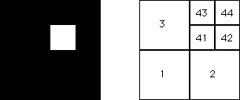

| If T4 never immediately follows T1, then
no points land in the square |
|  |
| Because S41 contains no points, the subsquares
|
| Continuing, here are the pictures showing the subsquares of address length 4 (left) and 5 (right) containing no points. |
| The pattern should be clear: |
| no points lie in any subsquare with address containing 41. |
Return to Driven IFS with forbidden combinations.